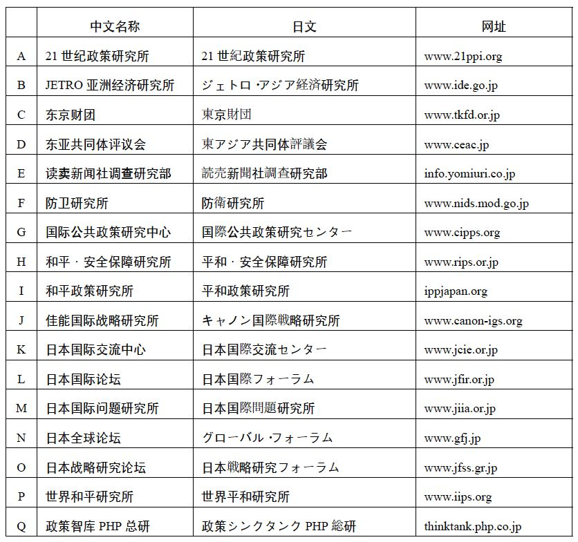
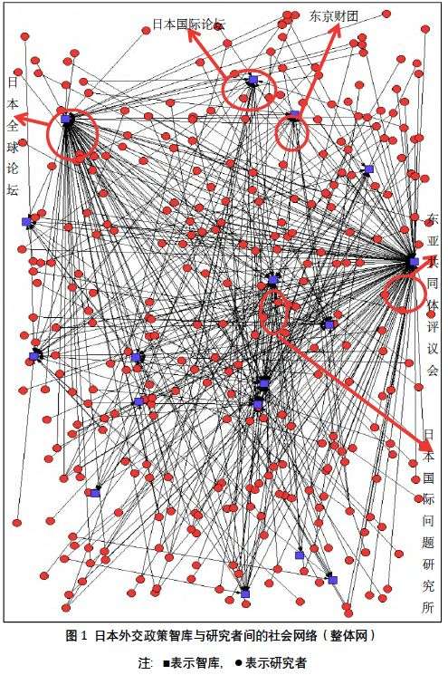
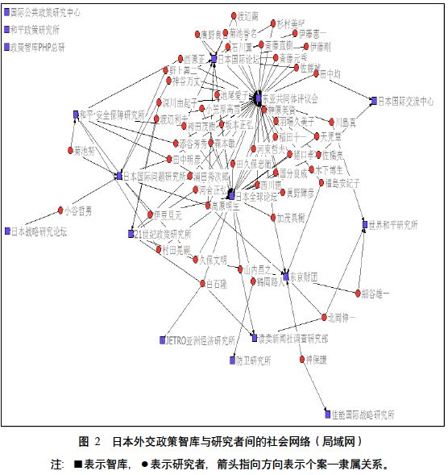
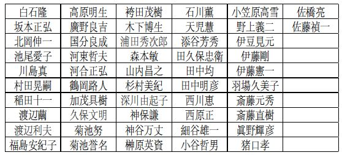
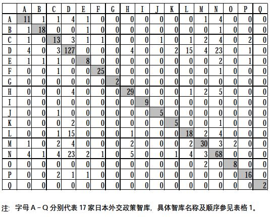
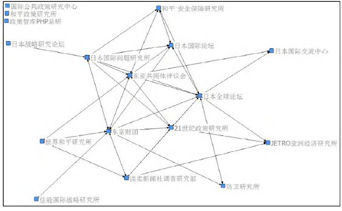
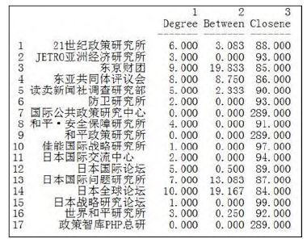
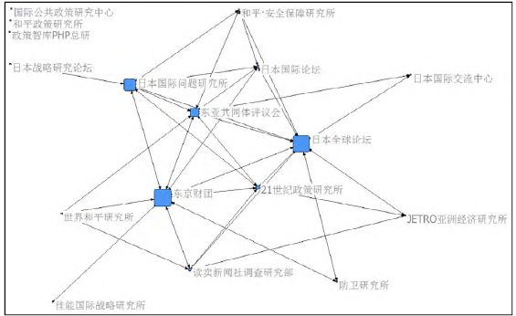

收录于合集
简
王梦雪
上海外国语大学博士后科研流动站博士后
摘要
社会网络分析是一种研究社会行动者之间互动关系的结构性方法。本文使用社会网络分析法研究日本外交政策智库间的关系，具体选取17家智库及其隶属的320名主要研究者作为数据源，通过矩阵运算和社会网络可视化分析，描绘了日本外交政策智库间的社会网络结构，进而发现了在该网络结构中智库是如何通过“联系”的方式来增强自身“权力”，甚至影响网络整体发展的。本文认为日本外交政策智库在网络化的互动环境中，通过两种方式发挥其影响力。一种以东京财团为代表，主要利用自身所拥有的丰富的社会资本，充当各行为体间的“中间人”角色，通过控制社会网络内部信息和资源的流动与供给以影响他者和网络整体。另一种以日本国际论坛、东亚共同体评议会、日本全球论坛为代表，通过“三位一体”的方式共享主要研究者、财政预算与信息资源，分担智库的不同功能，在自身能力及财源有限的不利情况下实现整体影响力的提升。
关键词
社会网络 外交政策智库 智库间关系 日本
随着全球治理不同议题领域的不断扩展，以及跨国关系网络的发展，国际政治行为体日趋多元。其中，智库作为公共政策研究机构，其政治影响力日益受到关注。关于“智库”的研究也已经成为当前政治学与公共管理学界的热点问题之一，并已形成了较为成熟的研究体系。无论是从宏观层次上的多元主义或精英理论视角，还是以中观层次上的政策过程理论，或是微观层次上的知识理论作为出发点，都是往往将主要关注点集中在“智库影响力”这一中心议题上。上述理论对智库的认识通常有两种，一种认为智库等公共政策组织只不过是构成国内外权力与影响力网络的一部分，这些组织的唯一目标在于实现某种政策上的“转换”。这种“转换”通常指将特定群体的“利益”转化为“专家意见”；另一种观点认为智库只是在当前已趋于饱和的“意见市场”中，期望在公共政策争论中发声或施加影响的行为体之一。
实际上，智库在政策形成过程中并不是一个孤立的单元，而是通过与其它相关政策行为体的沟通，以及相互施压来实现其影响力的。智库是特定政策网络的一部分。研究智库的影响力实现机制，不应局限于特定智库的某些特征或具体行为，还应该以联系的观点审视智库在关系网络中的动态特征 。 因此，本文的关注点在于智库间的关系，而非特定智库的具体特征。文章主要选取从事外交政策相关研究的日本智库作为研究对象，并采用社会网络分析（Social Network Analysis）的研究方法，考察智库间、智库与研究者间的关系网络，进而分析智库是如何通过网络化的方式，在外交政策与国际问题领域施加政策影响力的。
日本外交政策智库发展状况
根据美国宾夕法尼亚大学“智库与公民社会研究”项目发布的《2016 年全球智库报告》显示，截止2015年全球已有6846家智库。其中，亚洲有1262家智库，占全球智库总量的18.4%。日本共有109 家智库，所拥有的智库数量列全球第九位。在“世界顶级智库（含美国）”排名中，日本共有四家智库进入世界排名前175位。分别是第15位的日本国际问题研究所（亚洲智库排名第一）、第29位的亚洲开发银行研究所、第117位的世界和平研究所和第138位的防卫研究所。除了亚洲开发银行研究所之外，其它三家智库都属于本文所界定的外交政策智库。
尽管上述进入世界顶级智库排名的日本智库都属于外交政策智库和从事国际经济领域研究的区域型智库，但是总体而言，在日本从事外交与国际问题研究的智库却极其有限。根据日本综合研究开发机构（NIRA）于2014年发布的《智库情报2014》报告显示，全日本共有214家智库相关机构接受了此次调查。在关于智库主要涉及的专业领域（复合选项，最多可选择三个领域）一项问题中，被选次数最多的三个领域分别是产业（72家）、经济（71家）、国土开发与利用（55家），而选择国际问题领域的智库仅有19家。并且，在将这一问题设置为单选项之后，选择从事国际问题领域活动的智库数量进一步下降到了7 家。也就是说，此次调查中，仅有7家智库认为其主营业务领域涉及国际问题研究。日本缺乏外交政策智库的原因主要有三点。首先，日本的智库大多是由财界和企业主导建立的，它们进行产业、经济等相关领域的研究，其根本目的还是期望通过产出政策相关“专业知识”以影响日本政府的产业与经济政策，从而为自身行业发展或企业盈利提供更加友好的国内政策环境。
其次，大多数日本智库是通过接受中央省厅、地方政府与公共团体等政府相关机构的业务委托，或者接受政府补贴的形式开展研究工作的。而泡沫经济崩溃，以及此后的“失落的二十年”、2008 年全球金融危机、“3·11”东日本大地震等因素使得日本经济持续低迷，社会日趋保守，民众更多关注与切身利益相关的国内问题而非国际事件。日本政府在这样的国内外政治经济环境下，不得不每年大幅削减除社会保障以外的各项财政预算，最终导致近年来日本的人均国内生产总值、联合国会费分摊率、政府开发援助规模均一路下滑。日本智库受此影响，从政府那里获得的项目委托数量和补贴金额也随之减少。再加上日本政府在智库设立、资金、税收等方面有着诸多的限制性政策，国内社会又缺乏慈善捐赠的传统，使得大部分日本智库难以维持充足稳定的财源，愈发无力涉足需要耗费高额人力物力成本的国际问题领域。
最后，主导日本外交政策制定的政治家与政府官僚缺乏主动征询外部政策机构建议的意识，政府并未建立起与智库开展沟通协作的正式机制，导致智库、大学等民间政策研究机构在日本外交决策过程中影响力低下。反过来看，由于外交政策市场当中需求的缺乏，日本外交政策智库缺少成长的动力，更加难以发挥有效的政策影响力。
当前，日本政府认为日本国力的衰弱使其自身在国际社会当中的存在感降低，因此有必要发展“全民参加型”外交，提升日本智库在国际“意见市场”上的影响力。而日本智库所面临的现实发展困境在短期内又无法得到彻底的改善，所以构建智库间的关系网络就成了迅速提升智库政策影响力、保障稳定财源，以及维持高质量的政策专家资源的有效方式。
日本外交政策智库间的社会网络
社会网络分析考察的是社会结构的关系方面。应用这种方法，首先需要获取待研究样本的关系数据。本文的研究对象是日本外交政策智库，期望讨论的问题是这些智库间形成了怎样的关系网络，因此首先需要从众多日本智库中抽取外交政策智库的个案样本。
个案样本的来源有四处：第一是利用日本NIRA 综合研究开发机构的“智库情报”数据库，通过搜索关键词“外交”、“国际问题”、“安全保障”，找出与本文定义相符的外交政策智库。由于该数据库的智库数据只更新到2013年6月，为了尽可能保证所获取研究样本的完整性，需要进一步丰富样本来源。于是，本文选择与外交政策智库活动相关的日本外务省的网站作为第二处样本来源。具体通过搜索网站公开文件中所提到的智库机构、查找获得日本外务省“外交与安全保障调查研究事业费补助金”、“国际问题调查研究与建言事业费补助金”，以及参与“外交与安全保障相关智库有识者恳谈会”的智库名单来充实样本。第三处样本来源于美国宾夕法尼亚大学“智库与公民社会研究”项目发布的《2016年全球智库报告》。考虑到该报告所列智库主要是具有较高国际声誉与影响力的大型智库，而无论在国际影响力还是在规模方面，大部分日本外交政策智库都缺乏入选该报告相关榜单的实力，因此还需要借助第四处样本来源——维基百科关于日本智库的相关条目来完善最终取样。最终，此次抽样共获得17家外交政策智库样本，基本信息如表格1所示。
在确定了日本外交政策智库的关系系统界限之后，下一步任务是列出上述17个智库中从事“外交”、“安全保障”、“国际关系”领域研究的主要研究人员（包括上席研究员、高级研究员、研究主任、研究项目负责人、研究顾问、评议员等，并排除一般研究员、研究助理等初级研究人员）的名单。在进一步排除重复项，并结合各智库近十年内发布的研究报告、政策建议文件、会议资料当中的署名情况，排除只担任荣誉职位或行政官员职务，但是并不进行实际研究工作的人员后，共得到320人。进行这一工作的目的在于获取研究人员与智库之间的隶属关系数据。现实生活中的人们往往是通过他们所隶属的组织或群体而联系在一起的。研究“个人和群体之间的二元性”（the duality of persons and groups）问题，可以了解每个人是如何通过他们所隶属的机构而形成社会结构的，也可以发现社会结构又是如何通过一种制度化的安排限制并塑造着其中个体的行为的。具体到本文来看，可以将个体研究者隶属于某个或某几个智库的情况，看作个体“嵌套”于网络结构之中。因此，通过获取研究者与智库间的2-模数据，可以对智库间的网络结构进行分析。
社会网络分析中的数据分析需要通过数学计算来实现，较为便利的方法是使用UCINET、Pajek、Excel VBA 等数据分析软件来实现。本文主要使用的软件是UCINET。

表1 本文数据来源：日本外交政策智库列表
（一）日本外交政策智库与研究者间的社会网络
利用前文所收集到的数据源，首先需要绘制一个320 行×17 列（320 名研究者×17 家智库）的个案—隶属关系矩阵（case-by- affiliationmatrix），以便展开后续运算分析。这一2-模矩阵表示每个研究者具体参与了哪些智库的活动。
如果研究者与智库之间存在隶属关系，矩阵的对应格值则用“1”表示，不存在隶属关系则记为“0”。将这一2-模数据直接导入NetDraw，通过软件的可视化分析，可以得到表示320 名研究者与17 家智库之间隶属关系的网络关系图（图1）。

图1表示的是17家智库与320名研究者之间相互关联所形成的整体社会网络。该社会网络图所使用的发生矩阵（incidencematrix）是一个320×17的长方矩阵，其中共有337个点（agent）。两点之间的连线表示两个行动者之间直接相关或相互联系。一个多维量表中最多可能出现的线总数可以通过简单公式得出。假设一个无向图中共有n个点，一个点可能与其它任何点（除了自身之外）相连，那么这个图中最多可能拥有n(n-1)/2 条不同的线。因此，图1 中最多可能包含多达56616条线，但是仅凭肉眼很难识别出日本外交政策智库间的社会网络结构。为了观察便利，本文排除仅在一家智库任职的研究者，筛选出同时在两家以上智库担任研究工作的研究者共52人（表格2），重新导入52×17的发生矩阵，得到如下局域网络图（图2）。
如前文所述，“个人和群体之间的二元性” 反映了个人通过其自身所隶属的机构结成社会结构网络的事实。当某个研究者兼任两个或多个智库研究员时，可将其称之为连锁研究员。他出现在两个智库的主要研究人员名单中，就在这两个智库之间建立了联络。因此，通过考察两个智库间共享研究员的状况，可以了解智库间的社会网络联系。智库间关系的强度可以通过关系本身包含的“连锁研究者数”来测量。


表2 在多家智库兼任的研究者名单
图2 清楚地表明了52×17 矩阵的结构，一个点所拥有的指向它的线越多，证明这个点所拥有的关系越强。图中表示东亚共同体评议会、日本全球论坛、东京财团、日本国际问题研究所、日本国际论坛的点周围的线较多，说明这些智库之间的连锁研究者的数量多，信息共享和机构互动协作的机会更多。国际公共政策研究中心、和平政策研究所、政策智库PHP 总研在社会网络图中没有连线，说明这三家智库与其它智库之间没有连锁研究者，其研究活动通常独立展开，并与其它智库之间鲜有互动。从另一个方面来看，拥有较强“关系”的智库在政策市场中，比拥有“弱关系”的智库更容易获得多元化的信息，所形成的研究建议与“专家意见”的精度也更高。而且，他们在与其它智库的互动中有更多的机会“学习”彼此的长处、影响彼此的行为，从而在日本外交政策智库当中拥有更多的“权力”。
（二）日本外交政策智库间的社会网络
利用前文表示个案—隶属关系的2-模矩阵（320行×17列），可以推导出两个1-模矩阵（one- modematrices）。在个案—个案矩阵中，行和列都表示研究者，具体的矩阵格值表示特定的一对研究者是否由于共同隶属于同一个智库而关联在一起。即这一1-模矩阵展示了研究者之间实际存在的关系。在隶属—隶属矩阵中，行和列都表示智库，每个具体的矩阵格值展示了特定的一对智库之间是否由于拥有共同的研究者而关联在一起（参见表格3）。在社会网络分析中，这种表示隶属—隶属关系的1-模矩阵展示的是研究样本的社会关系结构，而通过个案—个案关系的1-模矩阵则无法观察到这种表示社会结构维度的结果。

本文关注的是智库间的关系，所以只需将表示研究者与智库间联系的2-模矩阵转化为17行×17列（17家智库×17家智库）的1-模矩阵，即可计算出每对智库间的连锁研究者数，进而了解各个智库的具体权力强度。如果将矩阵数据进行可视化处理，则可以得到更加直观的智库间关系多维量表（图3）。矩阵模态的转化需要通过数学计算获得，较为便利的方法是使用UCINET 中的对应乘积（cross- products）算法，将列模式（column）下的二值数据相乘，然后加总，得到各对智库间共享研究者的数量，这一算法同时也测量了智库间的关系强度（表格3）。表格3的正方形1-模矩阵表示的是每对智库之间共享研究者的个数。矩阵左上角到右下角对角线（diagonal）上的值表达了智库与自己的“关联”，也就是智库本身所拥有的研究者数量。因为我们关注的是智库之间的关系，所以在建立智库间社会关系网络时，可以将对角线上的值视作无意义数据。

图3 日本外交政策智库间的社会网络（多维量表）
接下来对表格3 的矩阵运算结果进行排序。我们可以发现，拥有关联智库数量最多的六家智库分别是日本全球论坛、东京财团、东亚共同体评议会、日本国际问题研究所、21世纪政策研究所、日本国际论坛；而拥有连锁研究者数量最多的则依次是东亚共同体评议会、日本全球论坛、日本国际论坛，东京财团和日本国际问题研究所并列第四，21世纪政策研究所列第五（表格4）。另外，图3的智库间社会网络图是应用多维量表（multidimensionalscaling）技术绘制的，它是一种利用空间和距离概念画出的关系数据图，图中点的距离越近，关系就越紧密。从图4可见，日本国际论坛、东亚共同体评议会和日本全球论坛在距离上比较接近，因此这三者具有较大的相似性，也就是说这三家智库可能拥有较多相同的连锁研究者。

表4 日本外交智库间的关系强度
（三）日本外交政策智库间社会网络的中心度分析
社会网络分析中“点的中心度”（point centrality）概念来源于社会计量学的“明星”概念。一个核心点指的是处于一系列联系“核心”位置的点，一个点的度数就是与该点直接相连的其它点的个数。通过测量一个点的中心度，可以了解这个点所代表的个人或组织在其社会网络中具有怎样的权力，或者居于怎样的中心地位。根据测量标准不同，刻画中心度的指标大致可以分为三种，分别是：度数中心度（degree centrality）、中间中心度（betweenness centrality）和接近中心度（closeness centrality）。度数中心度的含义与“点的中心度”概念最为接近，指的是与某个点相连的其它点的个数。中间中心度测量的是行动者对资源控制的程度，以及在多大程度上成为其所在社会网络中的“中间人”或“掮客”。对某个点接近中心度的测量是计算该点与其它各个点之间最短距离之和，一个“距离和”较小的点与图中其它许多点都“接近”。换句话说就是，某个点的接近中心度的值越小，越说明该点是网络的核心点。下面利用上文中的17 行×17 列1-模矩阵数据（表格3）进行智库的三种中心度计算（表格5），并根据计算结果重新绘制日本外交政策智库间的社会网络图。

表5 日本外交政策智库间关系的中心度分析结果
注：该表为UCINET中心度运算结果截图。根据论文需要，只选取了前三项中心度运算结果加以展示。
从表格5可见，度数中心度最高的智库是日本全球论坛，其值为10.000，度数中心度最低的智库是国际公共政策研究中心、和平政策研究所和政策智库PHP总研，它们的度数中心度值都是0.000。这说明在日本外交政策智库社会网络中，日本全球论坛总共与10个智库有联系，而国际公共政策研究中心、和平政策研究所和政策智库PHP 总研与其它智库都没有联系。这一结果与日本外交政策智库间的关系强度（表格4）排名情况一致，而且与社会网络图的内部结构状况相符（图2、图3）。
接着来看中间中心度的结果。度数最高的智库是东京财团，其数值19.833超过了此前在度数中心度上排名最高的日本全球论坛，成为了日本外交政策智库社会网络中最重要的“中间人”（brokerage）。“中间人”是指社会网络中向一个位置发送资源，却从另外一个位置那里得到资源的行动者。重要的“中间人”往往掌握着较为丰富的社会资本，更熟悉其它行为体的想法和行为，从而为自己带来更多的观念选择的机会。并且这种视野优势能够为自身和所属凝聚子群的发展创造机遇。另一方面，度数中心度较高的东亚共同体评议会、21 世纪政策研究所、日本国际论坛的中间中心度却很低，分别只有8.750、3.083、0.500。这说明东京财团在日本外交政策智库社会网络中拥有社会资本优势，而东亚共同体评议会、日本国际论坛等与其它智库共享了较多的研究者，却未掌握充足的资源。
最后来看接近中心度数据，数值最低的是日本全球论坛（84.000），其次是东京财团（85.000），数值最高的国际公共政策研究中心、和平政策研究所和政策智库PHP 总研均为289.000。这说明日本全球论坛、东京财团最靠近日本外交政策智库社会网络的中心，而国际公共政策研究中心、和平政策研究所和政策智库PHP 总研则离中心最远。
根据上述三种中心度数值重新绘制日本外交政策智库间社会网络图，从下图4 中可以清楚地发现东京财团、日本全球论坛、日本国际问题研究所的中心度最高，因此这三家智库是日本外交政策智库社会网络中的核心智库。国际公共政策研究中心、和平政策研究所和政策智库PHP 总研位于该社会网络之外，佳能国际战略研究所、日本战略研究论坛则处于网络的边缘。

图4 日本外交政策智库间社会关系网络中心度分析图
综上所述，日本国际论坛、日本全球论坛和东亚共同体评议会三家智库之间的相似性最高。在现实当中，这三家智库是一个“三位一体”的智库综合体，它们互为“姊妹团体”，分别承担了调查研究、政策对话和构建区域知识共同体的智库功能 。 东京财团在日本外交政策智库网络中掌握着最多的资源，拥有影响智库社会网络发展的较强能力。东京财团本身是隶属于日本最大财团——日本财团的独立民间智库。日本财团向其提供资金支持，东京财团则主要负责日本财团的国际业务。此外，东京财团还与美国战略国际问题研究所、布鲁金斯学会等世界著名智库有着长期的研究合作关系。因此具备了较强的政策影响力。企业智库佳能国际战略研究所和右翼智库日本战略研究论坛是该网络中的边缘行为体，对日本外交政策智库社会网络的影响力较弱，并未成为日本核心的外交政策智库。国际公共政策研究中心、和平政策研究所和政策智库PHP 总研三家智库完全被排除在关系网络之外。其中的国际公共政策中心由于主要研究领域并非外交政策，所以与该社会网络内其它智库没有形成紧密的联系，而另外两家智库则是由于自身影响力有限，才被排除在日本外交政策智库社会网络之外的。
结论
**本文使用社会网络分析法描绘了日本外交政策智库间的关系网络。通过对 17 ****家日本外交政策智库与 320 **名主要研究者之间隶属关系的分析，明确了哪些智库在该社会网络中占据核心位置，以及核心智库发挥政策影响力的方式 。 研究发现，日本外交政策智库在网络中强化自身关系强度、提高自身影响力的方式有两种：一种以东京财团为代表。这类智库主要利用所掌握的社会资本，在日本外交政策智库社会网络中充当“中间人”的角色，通过控制资源与信息的流动，提高自身在网络中的“权力”，进而凭借优势地位影响其它相关联智库、甚至是网络整体的发展；另一种以日本国际论坛、日本全球论坛和东亚共同体评议会为代表。这三家智库在其官方网站上声称，其自身分别拥有自己的人员编制与预算计划，在组织形式上属于彼此独立的组织。另一方面，这三家智库的主要研究者高度重合（参见表格4 与表格5），在预算执行方面相互协作，在具体业务上分别承担了智库的调查研究、政策对话和构建知识共同体的功能。这种方式有助于智库在资源有限的情况下实现更加高效的政策产出，并以“三位一体”的整体优势提高他们在网络中的影响力。
本文通过社会网络分析证明了日本外交政策智库间通过共享研究者的方式结成了较为稠密的关系网络结构 。 而对比美欧等国的智库现状可以发现，欧美智库尤其是著名的外交政策智库，在研究人员方面往往具有更高的独立性，所结成的社会关系网络多为跨国性或国际性的协作或执行网络。较之欧美智库，日本外交政策智库之所以结成了更高密度的社会网络，在很大程度上是由于其自身的发展程度、能获取的资源数量都更为有限。由于日本外交政策智库的研究者资源不够丰富，造成了少数有影响力、能发声的高级别的研究人员频繁游走于几个智库之间的情况，推高了智库间共享研究者的数值。再者就是日本智库的财政规模比同类型欧美智库要小，而国内法律环境限制与捐赠传统的缺乏，进一步导致大多数日本智库财源受限，不得不更多地依赖政府补贴与官方项目委托以维持财源稳定。而日本较为封闭的政治文化和决策体系，使得民间政策研究机构进入外交决策系统的通路较为狭窄，能够进入其中的智库通常具有官方背景，且相互之间的联系程度较普通民间智库之间更高。
此外，本文的研究价值还在于验证了社会网络分析法在智库研究中的有效性 。 当前的智库研究主要关注对个体智库的研究，或者针对不同国家智库的比较研究。尽管智库网络化、国际化已经成为当前全球政策市场中的普遍趋势，但是学界却并未对智库间关系的研究投入过多的精力。并且，现有的对个别智库对外合作情况的分析、还有那些借用网络概念对智库合作行为的泛泛而谈，并不能帮助我们更加全面地了解智库所在政策网络的整体状况。而社会网络分析法为观察智库间关系、了解“智库如何发挥影响力”提供了另一种视角。这种研究方法将智库视为无差别的行为体——网络中的点，避免了那些关于智库个体特征的纷繁复杂的细节描述所带来的干扰，提供了一种观察智库政策影响力机制的结构化方案，有助于我们从另外一种角度观察智库这一政策行为体的整体状况。
不过，这种研究方法仍然存在一定的不足之处。 首先，社会网络分析需要基于研究者所收集的关系数据而展开。通过抽取各种公开发布的纸质或电子文本资料的社会关系信息、设计标准化问卷、开展正式及非正式访谈等方式都可以获得研究所需的数据资料。但是，数据选择标准在相当程度上取决于研究者的主观判断与选择，并且一些关系数据可能无法通过公开渠道获得，这就容易导致分析样本出现数据上的偏差或缺损。而且从客观上来说，这种数据采样上的缺陷很难从根本上杜绝 。 例如，本文的数据主要采集自各智库官方网站的公开资料。如果个别研究者并没有公开在某个智库任职，但是却频繁参与该智库活动的话，这一研究者的隶属关系就无法在矩阵中体现。
再者，社会网络分析法将网络中的行为体视为无差别的“点”，排除了行为体的个体与社会属性 。 这对各种数学运算的展开显然是有利的。但是具体到社会科学研究，行为体的个体特征与社会属性往往对其行为方式有着重要的影响力。社会网络分析所呈现的关系结构主要反映的是行为体的“影响力作用机制”，而非影响力的绝对强度。例如，本文分析样本中的防卫研究所和JETRO 亚洲经济研究所，在国际社会当中也具有较高程度的知名度，但是这两家智库在日本外交政策智库网络中的各项指数排名并不靠前。这显然不是因为这两家智库本身的实力有限。防卫研究所隶属于日本防卫省，由于其自身特殊的机构性质，导致其研究人员极少在其它智库机构兼任，这就在相当程度上降低了其所拥有连锁研究者的数量，因而拉低了该智库在网络中的一系列关系指数。而JETRO 亚洲经济研究所虽然也进行较多外交政策领域的研究活动，但是其业务领域更侧重于区域与国际政治经济方面，导致其与网络中其它智库之间的连锁研究者数量也较少。因此，在肯定社会网络分析法在智库研究当中的作用的同时，还应该重视与其它定性研究方法的结合，进一步提高研究精确度，这也是本文后续研究方向所在。（文章有删改，详细内容参看原文。）
文章来源：《国际观察》2017年第6期
筛选：ササ 编辑：ササ 里仝